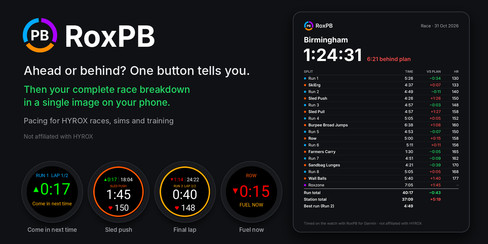
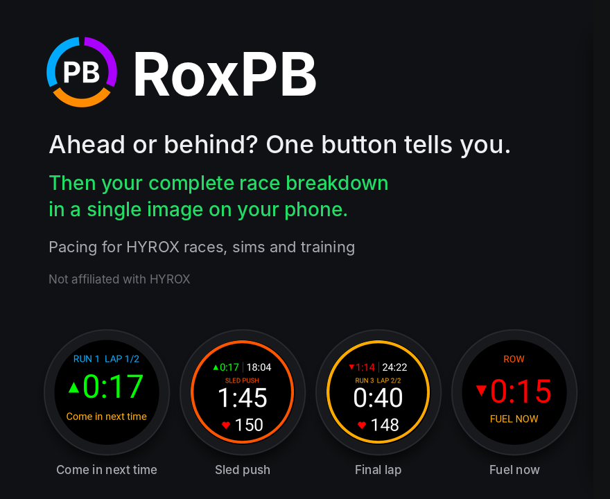
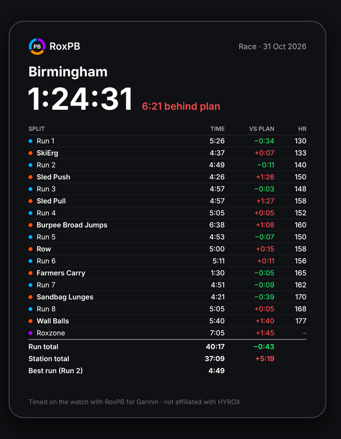

Weights.Running.Hyrox.One record.
Set up your workouts, log every session and manage your performance, all in one app. It covers weights, running, Hyrox and any mix of them, and runs come in from Garmin, Strava and other apps on their own.
In testing now. Coming to Google Play for Android.
Weights
Sets, reps and load, filled in from last time, with a target for what to lift next.
Running
Pace, speed, incline and intervals, outside or on a treadmill, typed in or brought in from your watch.
Hyrox
Race-format sessions with a target for every run and station, and a debrief against your plan.
Hybrid
Any mix in one session: lift, then ski, then run. Each part counts where it should.
Set it up once. Log it as you train.
Build the workouts you repeat, keep them in folders, and start one with a tap. The app fills in what you did last time, so logging a set takes a second.
- Your workouts: any mix of lifts, runs and stations, in the order you do them.
- As you train: last time's numbers, a target for today and a rest timer after each set.
- Unplanned days: start a quick session and add exercises as you go.
- Afterwards: tap any set in your history to correct it.
Performance you can read at a glance
Your bests sit in one list, each with the date it was set, so you can see what is moving and what has stalled.
- Lifts: heaviest set and one-rep max for every exercise you do regularly.
- Runs: fastest pace, and your best time at 1 km, 5 km, 10 km and beyond.
- Sessions: the most weight you have moved in one workout.
- New bests: marked with a trophy for the month after you set them.
Volume, added up for you
How far, how much and how often, across every session. A kilometre on the SkiErg counts the same whether it was a race station or an interval after a back workout.
- Every station: metres on ski, row, sleds, carries and lunges, by week, month, quarter or year.
- Every run: distance and time, including runs inside a weights or Hyrox session.
- Every lift: working sets by muscle and the load moved.
The pattern in your training
One screen shows the balance of your week and how it compares with the weeks before, so gaps are easy to spot before they become habits.
- Balance: push against pull, upper against lower, and sets for each muscle.
- Consistency: sessions against your weekly goal, and your streak.
- Warm-up and cool-down: how often you did them, and stretching on its own.
- Stalled lifts: exercises that have stopped progressing.
Bring your training with you
You do not have to start from nothing, or log a run twice.
Garmin
Runs from your watch arrive through Health Connect. Past runs import from a Garmin Connect export.
Strava
New runs through Health Connect, and your history from a Strava account export.
Health Connect
Runs and bodyweight from any app that shares with it, and your sessions shared back if you choose.
Other apps
Years of gym history from a CSV file, with exercise names matched to the library for you.
Racing Hyrox? Take your plan to the start line.
HybridPB is where you set up and review your training. RoxPB is its partner on your Garmin watch for races, sims and training sessions. It paces you against your plan at every checkpoint, then every split comes back to HybridPB for the debrief.



See RoxPB at roxpb.comYour data stays on your phone
There is no account and no server. Backups are files you control, and you can send a copy to your own cloud storage whenever you like. The privacy policy has the detail.